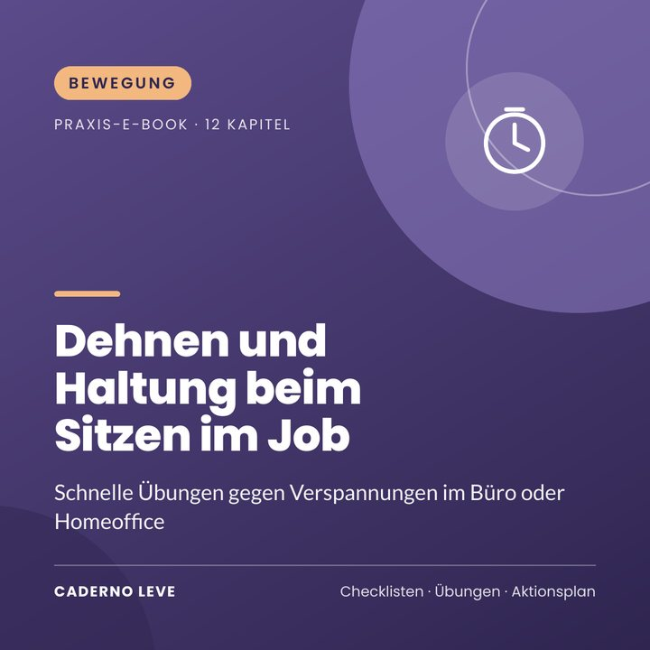

Dehnen und Haltung für alle, die im Sitzen arbeiten
Schnelle Übungen gegen Verspannungen im Büro oder Homeoffice: Ergonomie, aktive Pausen, Dehnfolgen von 3, 5 und 10 Minuten und ein 21-Tage-Plan.
Dieses E-Book ist in Kürze erhältlich.
Sichere Zahlung und PDF-Auslieferung über Kiwify
Preis in brasilianischen Real (BRL). Beim Bezahlen siehst du den Betrag in deiner Währung.
Steifer Nacken und müder Rücken nach Feierabend? Lerne schnelle Pausen und Dehnübungen für den Alltag.
Dehnen und Haltung für alle, die im Sitzen arbeiten ist ein praktischer Leitfaden für alle, die den Tag auf dem Stuhl verbringen, im Büro oder zu Hause.
Du lernst, deinen Arbeitsplatz einzurichten, aktive Pausen zu machen, Nacken, Schultern, Rücken, Hüfte, Handgelenke und Augen zu dehnen und die Gewohnheit in 21 Tagen aufzubauen.
Das nimmst du mit
- Ergonomie-Checkliste
- Aktive Pausen
- Übungsfolgen von 3, 5 und 10 Minuten
- 20-20-20-Regel für die Augen
- 21-Tage-Plan
Das steckt drin
- Kapitel 1Was langes Sitzen bewirkt
- Kapitel 2Den Arbeitsplatz einrichten
- Kapitel 3Aktive Pausen
- Kapitel 4Nacken und Schultern
- Kapitel 5Rücken und Lendenbereich
- Kapitel 6Hüfte und Beine
- Kapitel 7Handgelenke, Hände und Augen
- Kapitel 8Atmung und Entspannung im Arbeitsalltag
- Kapitel 9Fertige Übungsfolgen
- Kapitel 10Kraft für eine gute Haltung
- Kapitel 11Wann du Hilfe suchen solltest
- Kapitel 1221-Tage-Plan
- ExtraZusammenfassung und Aktionsplan für die Umsetzung
- ExtraArbeitsblatt und Checkliste zum Ausdrucken
Für wen es ist
- Alle, die im Sitzen arbeiten
- Alle im Homeoffice
- Alle, die abends verspannt sind
Für wen es nicht ist
- Keine Behandlung von Schmerzen oder Verletzungen
- Ersetzt keine Physiotherapie oder ärztliche Untersuchung
Bonus: Arbeitsblatt „Mein Tag mit weniger Verspannung“ — Ergonomie und Pausen.
Wichtiger Hinweis
Dieses E-Book dient der Information und enthält allgemeine Anregungen für Bewegung. Es ersetzt weder eine ärztliche Untersuchung noch die Begleitung durch eine qualifizierte Trainerin oder einen qualifizierten Trainer. Wenn du eine Herzerkrankung, Bluthochdruck, Diabetes, Schmerzen oder Verletzungen hast, schwanger bist oder lange keinen Sport gemacht hast, sprich vor dem Start mit deiner Ärztin oder deinem Arzt. Hör sofort auf und hol dir Hilfe, wenn du Brustschmerzen, Schwindel, ungewöhnliche Atemnot oder starke Schmerzen spürst.
E-Book von Caderno Leve
Dehnen und Haltung für alle, die im Sitzen arbeiten
R$ 27,90
Demnächst erhältlich